Estos ejercicios corresponden a lo explicado en la lección sobre el módulo turtle (2). En ellos se utilizan bucles anidados (con variables independientes), tratados en la lección bucles for (2).
Escriba un programa que solicite un número entre 0 y 10 y dibuje un cuadrado de puntos:
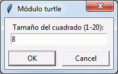
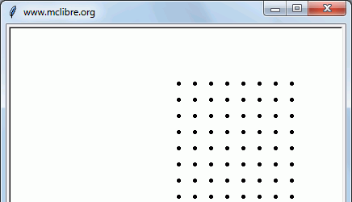
Nota: En el ejemplo, la separación entre puntos es de 20 píxeles y el grosor de los puntos es de 5 píxeles.
Modifique el programa anterior de manera que el programa solicite también el grosor de los puntos (entre 3 y 20 píxeles):
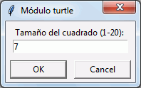
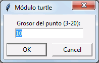
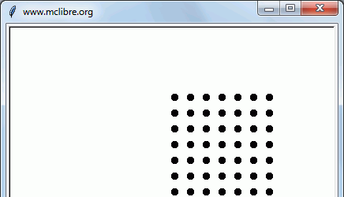
Modifique el programa anterior de manera que el programa solicite también la separación entre puntos (entre 2 y 6 veces el grosor del punto):
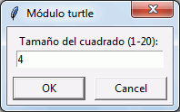
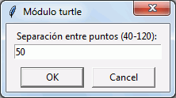
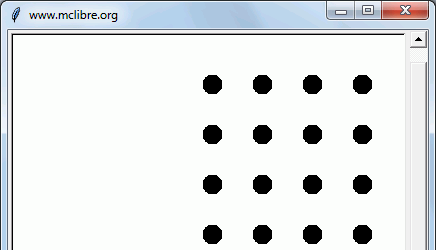
Modifique el programa anterior de manera que el programa dibuje un rectángulo de puntos:
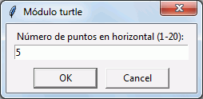
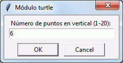
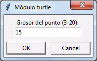
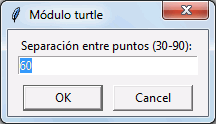
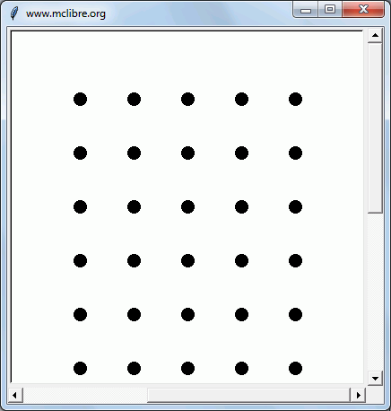
turtle (3) - 2 - Trama de cuadrados
Escriba un programa que solicite el tamaño y el número de cuadrados a dibujar. Los cuadrados se dibujarán en horizontal separados el ancho del cuadrado.
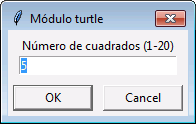
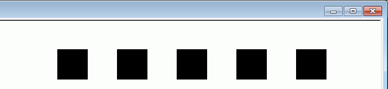
Modifique el programa anterior de manera que el programa dibuje una trama rectangular de cuadrados.
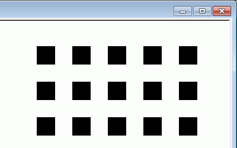
Modifique el programa anterior de manera que el programa pregunte la separación entre los cuadros.
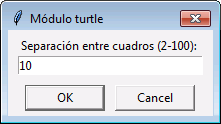
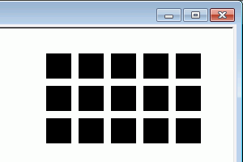
Nota: Si la separación entre los cuadrados es más pequeña que el tamaño del cuadrado, esta figura produce una conocida ilusión óptica. Al mirar el dibujo, aparecen y desaparecen círculos grises en las esquinas de los cuadrados.
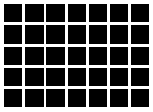
Modifique el programa anterior de manera que el programa dibuje cuadrados en las esquinas de los cuadrados.
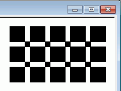
Modifique el programa anterior de manera que el dibuje sea el negativo del ejercicio anterior. (No es necesario reescribir completamente el programa, sólo hace falta añadir un rectángulo y cambiar los colores).
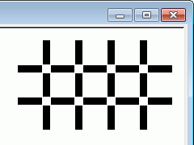
turtle (3) - 3 - Tramas
Escriba un programa que solicite el tamaño y el número de triángulos a dibujar.
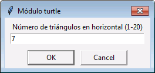
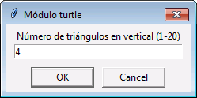
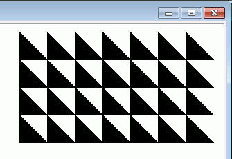
Escriba un programa que solicite el tamaño y el número de molinillos a dibujar.
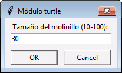
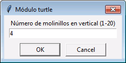
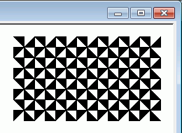
Nota: La figura básica es la siguiente:
Escriba un programa que solicite el tamaño y el número de motivos a dibujar.
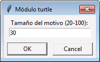
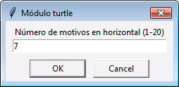
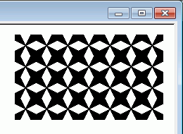
Nota: La figura básica es la siguiente:
Escriba un programa que solicite el tamaño y el número de motivos a dibujar.
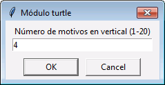
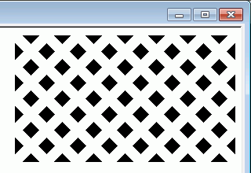
Nota: La figura básica es la siguiente:
turtle (3) - 4 - Tramas
Escriba un programa que solicite el número de puntos en el lado de la figura (entre 1 y 20), el grosor del punto (entre 3 y 20 píxeles) y la separación entre puntos (entre 2 y 6 veces el grosor del punto) y dibuje la figura siguiente:
 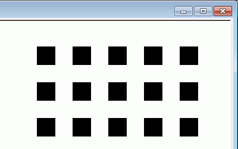
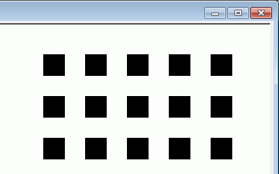
 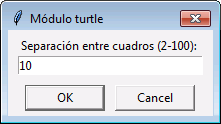
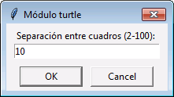
 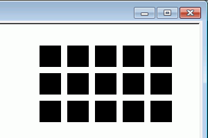
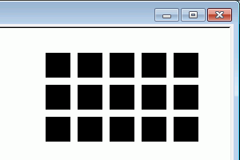
 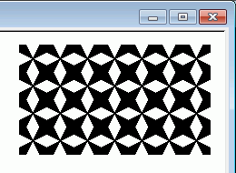
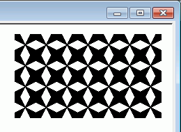